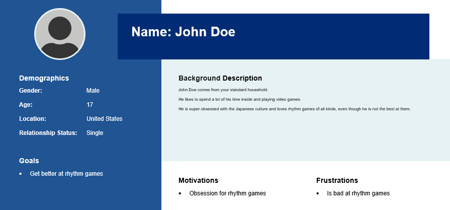

This is a solo team with its sole member being Alice!
(that means i do everything)Genre: Story/RPG, Rhythm
This game will have the story rich RPG elements mixed with the interesting rhythm game gameplay. Unlike most rhythm games, it will have multiple types of gameplay, even some of the same types will vary. (think 2K/3K/4K)
The target audience is for the people who love multiple types of rhythm games or those wanting to hone their skills in some.
The game plans to target people in their late teens (15-19) who like rhythm-based video games.
The game is planned to release on itch.io under a cheap price (~$5) and possibly on Steam later on in the life time.
A demo will be released on Newgrounds to help with promotion
With it being a rhythm game, the soundtrack will also be able to be downloaded in its highest quality .wav formats for a fee.
Selling the .FLPs (music project files) for songs could also be a point of revenue.
INSERT GAME CONTENT STUFF HERE!!!!!!
INSERT GAME CONTENT STUFF HERE!!!!!!
Mixie is the character you play as.
She is a troubled musician and after hearing the news of a new law that the mayor passed that
goes strictly against musicians, she feels like she has to do something.
Mixie is very passionate about what she does and will go tooth and nail just to make things right.
Edmund is the evil mayor you have to go against in Transitional.
He is strictly anti-musician and hates them with his whole evil heart.
Since he is the mayor, he abuses his power alot to make musicians suffer.
The game will "end" when you complete the story and managed to beat Mayor Edmund
Replayability will come in two different ways: easter eggs & mapping difficulity
The game will feature easter eggs around the map that will let the player to do other side things instead of focusing on the story.
Some of these will give achivements which allow completionists get 100%
Along with that, players will be able to choose from an Easy, Normal, and Difficult option.
This is to allow newer players have a better time playing the game and come back to harder maps later.